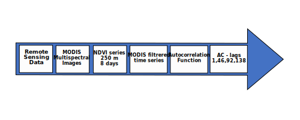

INFORMATION SYSTEM TO MONITOR
GLOBAL CHANGE IMPACTS
INFOLANDYN
Project
About
Products
Viewer
Dinamicland Mapper
Dinamicland Indicator
Dinamicland Field
News
Contact
DATA SOURCE
Please select a value
A_SATELITE_IMAGERY
B_STATISTICS_PRODUCTS
C_ENVIRONMENTAL_INFORMATION
D_ENVIRONMENTAL_STATISTICS
E_INFOGRAPHICS, GENERAL INFORMATION, NEWS
A_SATELITE_IMAGERY
Please select a value
Level A1
Level A2
Level A3
Level A1
Please select a value
MODIS (MOD17A2H) Spectrum
MODIS (MOD09A1) Spectrum
MODIS (MOD09Q1) Spectrum
MODIS(MOD13Q1) Spectrum
Landsat 5
Sentinel-2 Spectrum
Level A2
Please select a value
GPP 500m
AR 500m
AS2 500m
NDVI 500m
MODIS NDVI 250m time series
Time Series of secchi disk
NDVI 10m
RED and NIR bands
NIR and SWIR bands
AVHRR-NDVI time series
Level A3
Please select a value
AR 500m filtered
AS2 500m filtered
NDVI 500m filtered
MODIS NDVI-filtered
NDVI 10m filtered
B_STATISTICS_PRODUCTS
Please select a value
Level B1
Level B2
Level B1
Please select a value
Accumulative year Values
Start of growing period
End of growing period
Periodogram
Mean annual NDVI
Autocorrelation values at lags 8 days, 6 months and 1, 2,3 years
Autocorrelation values at lags 10 days, 6 months and 1 2 and 3 years Differences Ratios
Monthly means values
Periodogram
Autocorrelation function
Level B2
Please select a value
Cumulative GPP prewildfire
Length of growing period
Periodogram ordinates at 4, 6 months and one year
Trends of mean annual NDVI
Monthly mean annomalies
Short period mean RED and NIR bads
Short period mean NIR and SWIR bands
Periodogram ordinates at 4, 6 months and one year - Fisher Kappa test
Autocorrelation values at lags 15 days, 6 months, 1, 2 and 3 years
C_ENVIRONMENTAL_INFORMATION
Please select a value
Cumulative GPP
Fallowed areas (annual)
Agricultural intensification of maize and rice areas
D_ENVIRONMENTAL_STATISTICS
Please select a value
Fgures and tables of cumulative GPP in Salamanca
Tables and figures of surface of fallowed area. Change of fallowed area between years
Tables and figures of the increase or decrease in the number of crop cycles or maize and rice areas in Ecuador
New Selection
PRODUCT INFORMATION
PRODUCT LEVEL
SUBPRODUCT LEVEL
PRODUCT CODE
Export Metadata
Product Name
Map
Download
MAP LINK
Hyperlink
Description
Keywords
text keywords
WorkFlow:

Product citation
text production
Copyright & License
Details
tex copyright
text details
Related resources and products
text related
Comments
text comment